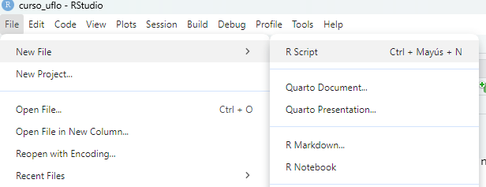
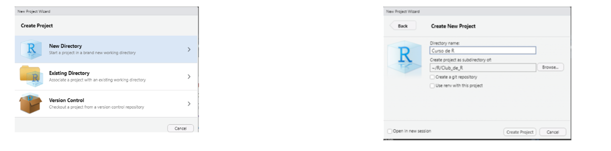

La interfaz de RStudio.
Primeros pasos en R
R y RStudio: ¿Cuál es cuál?
A veces podemos confundirnos un poco al principio con R y RStudio, ¡pero no te preocupes! Pensalo de esta manera:
- R es el motor del coche 🚗: Es el lenguaje de programación en sí mismo, la potencia que hace todo el trabajo pesado, los cálculos, el análisis.
- RStudio es el tablero de control dashboard 🎛️ del coche: Es la interfaz que hace que sea mucho más fácil y amigable trabajar con R. Nos da las herramientas organizadas, botones, pantallas, todo en un solo lugar para que la experiencia sea más cómoda y eficiente.
En resumen: Necesitas tener R instalado (el motor) para que RStudio (el tablero) funcione. RStudio usa R para todo.
RStudio IDE: Tu cocina de datos 🧑🍳
Imaginate que RStudio es tu cocina En una cocina tenes diferentes espacios y herramientas, y en RStudio también:
Los “cajones” de RStudio

Tenemos 4 grandes areas
Editor de scripts (Fuente): Es como tu recetario 📒. Aquá escribis y guardas tus “recetas” de análisis de datos, es decir, tus scripts de R. Podes escribir varias líneas de código, guardarlas y ejecutarlas cuando quieras.
Consola: Es como la cocina 🔥 o la mesada de trabajo. Aquí podes ejecutar comandos de R uno por uno, probar cosas rápidamente, ver resultados inmediatos. Es interactiva.
Entorno Global (AKA el Environment): Es como tu alacena 🧺. Aquí se almacenan todos los “ingredientes” que estás usando en tu análisis: tus datos importados, los objetos que creas, las funciones, etc. Podes ver qué tienes “guardado” y cómo se llaman.
Visor de archivos, gráficos, paquetes, ayuda (Pestañas abajo a la derecha): Son como utensilios y electrodomésticos varios 🍽️. Te permiten ver tus archivos en la computadora, visualizar gráficos que creas, administrar los paquetes de R que tienes instalados, acceder a la ayuda y documentación, etc.
¡A cocinar! Primeros pasos en la “cocina” RStudio
Ahora que conocemos nuestra “cocina de datos”, vamos a dar los primeros pasos:
1. La consola: calculadora y probador rápido 🧮
La consola es tu espacio interactivo. Podes usar R como una calculadora directamente por ejemplo probemos copiar este código a nuestra consola:
1 + 12 * 3También podes probar comandos más complejos y ver el resultado al instante. > Probá un par de ejemplos en casa y los vemos juntos en clase!
2. Scripts: Guardando nuestras recetas 📝
Escribir comandos directamente en la consola es útil para probar, pero para un análisis más serio, necesitamos scripts.
Un script de R es un archivo de texto plano (con extensión .R) donde guardas una serie de comandos de R.
Es como guardar tu receta en un archivo para poder repetirla o modificarla después.
En RStudio, abris un nuevo script desde
Archivo > Nuevo Archivo > Script de R.

¡Buenas prácticas!
Comenta tus scripts (usando #) para recordar qué hace cada parte del código. Guarda tus scripts con nombres descriptivos (ej: analisis_encuesta_2024.R).
3. Markdown, R Markdown y Quarto: Presentando nuestros platos 🍽️
Una vez que cocinamos nuestros datos y tenemos resultados, queremos presentarlos de forma clara y profesional. Aquí entran en juego herramientas para crear documentos:
Markdown: Es un lenguaje de marcado ligero para escribir texto de forma sencilla y con formato (títulos, listas, links, imágenes, etc.). ¡Como escribir en negrita con texto o en itálica con texto!
R Markdown: Es una extensión de Markdown que ¡entiende código de R!. Podes mezclar texto en Markdown con bloques de código de R que se ejecutan y muestran los resultados (tablas, gráficos, etc.) ¡Ideal para informes dinámicos!
Quarto: Es la nueva generación de R Markdown. Es más potente y flexible, permite crear no solo documentos, sino también presentaciones (como esta!), sitios web, blogs, libros y más. ¡Y no solo con R, sino también con otros lenguajes!
Proyectos
Trabajar con proyectos en RStudio hace que todo el trabajo sea más sencillo. Los proyectos crean una carpeta en nuestra PC en donde se almacenarán los archivos, tablas, scripts, y hace que todo sea más organizado.
Para crear un proyecto tenés podés entrar en:
File
- New project
Y luego poner el nombre de la carpeta.

¡Ya diste tus primeros pasos! 👣
Con esta introducción, ya tenes una idea general de:
- La diferencia entre R y RStudio.
- Los componentes principales de la interfaz de RStudio (tu “cocina de datos”).
- Cómo usar la consola como calculadora.
- Qué son los scripts y por qué son importantes.
- Las herramientas para presentar tus resultados (¡Quarto!).
It’s a wrap
¡Ahora es momento de explorar, practicar y empezar a cocinar datos sociológicos! En la próxima clase, vamos a empezar a trabajar con datos reales en RStudio. ¡Prepárense para ensuciarte las manos (digitalmente) con los datos!